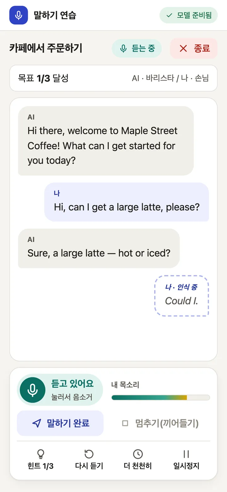
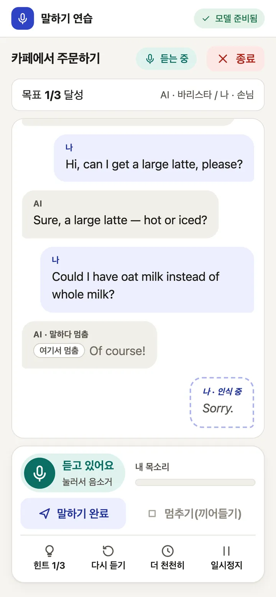
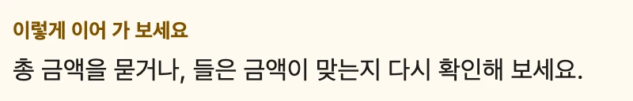
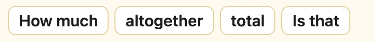
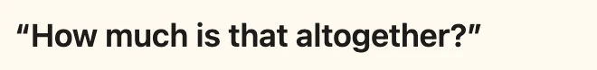
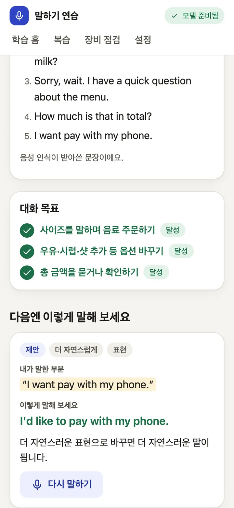
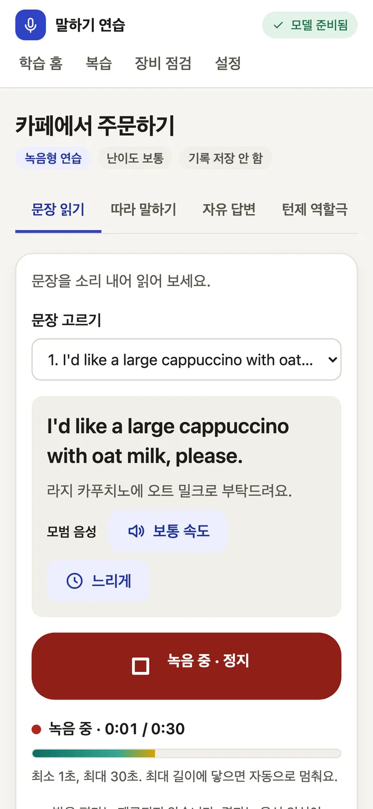
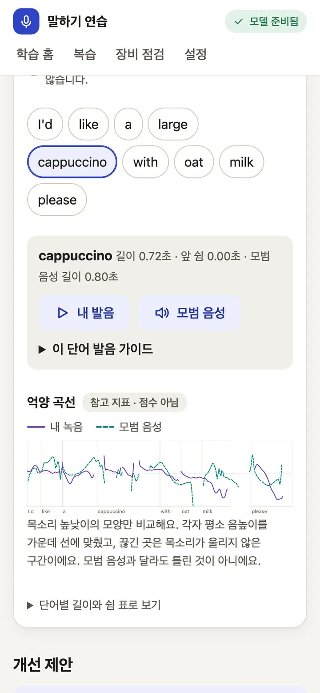

Speak English out loud. 영어, 소리 내어 말해 보세요.
Nobody's listening. Not even the cloud. 아무도 듣지 않아요. 클라우드도요.
A speaking partner for Korean learners of English. Act out real situations with an AI that listens, answers in a natural voice and stops the moment you cut in. Speech recognition, the language model and the voice all run on your Mac, and after setup it works offline.
한국어 학습자를 위한 영어 말하기 상대입니다. 실제 상황을 AI와 영어로 주고받으면, AI는 자연스러운 목소리로 답하고 내가 끼어들면 바로 멈춥니다. 음성 인식, 대화 모델, 음성 합성이 모두 내 Mac에서 돌아가고, 설치가 끝나면 인터넷 없이 동작합니다.
git clone https://github.com/cskwork/voice-roleplay.git && cd voice-roleplay && ./app setup && ./app start
Apache-2.0. Apple Silicon Mac, validated on an M3 Pro (36 GB). About 30 GB of disk. No account, no telemetry. Apache-2.0. Apple Silicon Mac (M3 Pro 36 GB에서 검증). 디스크 약 30 GB. 계정도, 텔레메트리도 없습니다.

say.
실제 앱에서 캡처한 회화 화면입니다. 화면 문구는 한국어, 대화는 영어입니다. 캡처할 때 학습자 대사는 macOS say 합성 음성으로 넣었습니다.
Talk like it's real. 진짜처럼 말해 보세요.
Pick a situation, say your part out loud and keep going. When you get stuck, help comes in small steps.
상황을 고르고, 내 대사를 소리 내어 말하고, 대화를 이어 가세요. 막히면 조금씩 도움을 받을 수 있습니다.
See your words as you say them.말하는 동안 내 말이 보여요.
A caption follows you while you speak and settles into the final transcript when you pause. Over 200 benchmark turns, the first caption appeared within 0.66 s (p95).
말하는 동안 자막이 따라오고, 말을 멈추면 최종 전사로 바뀝니다. 200턴 벤치마크에서 첫 자막은 0.66초 안에 나왔습니다(p95).

Cut in whenever you want.언제든 끼어드세요.
Start talking while the AI is speaking and it stops, marks where it stopped and listens. Only the words it actually said stay in the conversation. Measured stop time was 0.20 s (p95) across 66 barge-ins.
AI가 말하는 중에 말을 시작하면 AI가 멈추고, 멈춘 위치를 표시한 뒤 내 말을 듣습니다. 실제로 말한 부분만 대화에 남습니다. 끼어들기 66회에서 측정한 정지 시간은 0.20초(p95)였습니다.

Stuck? Take a hint.막히면 힌트를 받으세요.
Hints come in three steps, so you take only as much help as you need: the Korean meaning of what was just said, then key words, then a full example sentence. The step-one translation is written by the local model and can be wrong.
힌트는 세 단계라 필요한 만큼만 받을 수 있습니다. 방금 들은 말의 한국어 뜻, 핵심 단어, 예시 문장 순서입니다. 1단계 번역은 로컬 모델이 만들기 때문에 틀릴 수 있습니다.
-
Hint 1/3 · Korean meaning힌트 1/3 · 한국어 뜻
The AI's last line, translated into Korean by the local model.
AI가 방금 한 말을 로컬 모델이 한국어로 옮겨 줍니다.
-
Hint 2/3 · Key words힌트 2/3 · 핵심 단어


-
Hint 3/3 · Example sentence힌트 3/3 · 예시 문장

Finish with one thing to fix.끝나면 고칠 점 하나를 챙겨요.
Each scenario has goals, such as asking for the total, and they tick off as you reach them. Afterwards you see what you said, which goals you reached and a more natural way to say a line, with a "say it again" button to practise it right away.
시나리오마다 "총 금액 물어보기" 같은 목표가 있고, 달성하면 체크됩니다. 대화가 끝나면 내가 한 말, 달성한 목표, 더 자연스러운 표현을 보여 주고, "다시 말하기" 버튼으로 그 문장을 바로 연습할 수 있습니다.

Or take it slower.천천히 연습해도 돼요.
Recorded practice has four modes: read a sentence, shadow the model voice, answer freely, or roleplay turn by turn. You get a transcript and written feedback on grammar and phrasing.
녹음형 연습은 문장 읽기, 따라 말하기, 자유 답변, 턴제 역할극 네 가지입니다. 전사와 함께 문법·표현에 대한 글 피드백을 받습니다.

Hear yourself next to the model.내 목소리와 모범 음성을 나란히.
Tap a word to play your own recording of it, then the model voice saying the same word. A pitch contour lays both intonation lines side by side. It is a reference for your ear. There is no pronunciation score.
단어를 누르면 그 단어의 내 녹음과 모범 음성을 차례로 들을 수 있습니다. 억양 곡선은 두 억양을 나란히 보여 줍니다. 귀로 비교하기 위한 참고 자료이고, 발음 점수는 없습니다.

Four scenarios so far: ordering at a cafe, asking for directions, hotel check-in and a job interview. Their sentences and translations are drafts waiting for native-speaker review.
지금은 시나리오 네 개가 있습니다: 카페 주문, 길 묻기, 호텔 체크인, 면접. 문장과 번역은 원어민 검수를 기다리는 초안입니다.
Your voice stays on your Mac. 내 목소리는 내 Mac 밖으로 나가지 않아요.
Each of these follows from how the app is built, and you can check every one in the code.
모두 앱의 구조에서 나오는 성질이라, 코드에서 하나씩 확인할 수 있습니다.
-
Every server listens on 127.0.0.1 only. There is no LAN or cloud mode.
모든 서버가 127.0.0.1에만 바인딩합니다. LAN이나 클라우드 모드는 없습니다.
-
Microphone audio is never written to disk. A recording is released from memory when its job ends, fails or is cancelled.
마이크 음성은 디스크에 쓰지 않습니다. 녹음은 작업이 끝나거나 실패·취소되면 메모리에서 해제됩니다.
-
Transcripts live in session memory unless you turn on history, and you can delete all of it from settings.
전사는 기록 저장을 켜지 않으면 세션 메모리에만 있고, 설정에서 전부 지울 수 있습니다.
-
Logs keep event names, ids, durations and error codes. Transcripts, prompts, model output and audio never go in.
로그에는 이벤트 이름, id, 길이, 오류 코드만 남깁니다. 전사, 프롬프트, 모델 출력, 오디오는 기록하지 않습니다.
-
No telemetry, no CDN and no downloads while it runs. Workers start with
HF_HUB_OFFLINE=1.실행 중에는 텔레메트리, CDN, 다운로드가 없습니다. 워커는
HF_HUB_OFFLINE=1로 시작합니다. -
One caveat: macOS can still leave traces in swap or crash dumps. Turn on disk encryption if that matters to you.
주의할 점: macOS의 swap이나 crash dump에는 흔적이 남을 수 있습니다. 중요하다면 디스크 암호화를 켜 두세요.
Four local models and a browser tab. 로컬 모델 네 개와 브라우저 탭 하나.
Your browser streams 16 kHz audio to a small FastAPI gateway on your machine. Silero VAD decides when you start and stop talking. Your words go to the speech model, the transcript to the language model, and the reply to the voice model sentence by sentence, so the AI starts speaking before the whole answer exists.
브라우저가 16 kHz 음성을 내 컴퓨터의 작은 FastAPI 게이트웨이로 보냅니다. Silero VAD가 말의 시작과 끝을 판단하고, 음성은 음성 인식 모델로, 전사는 대화 모델로, 답변은 문장 단위로 음성 합성 모델로 갑니다. 그래서 답변이 다 만들어지기 전에 AI가 말하기 시작합니다.

| Job역할 | Model모델 | Runtime런타임 | Licence라이선스 |
|---|---|---|---|
| Speech recognition음성 인식 | Qwen3-ASR-0.6B | transformers · MPS | Apache-2.0 |
| Conversation대화 | Qwen3-4B-Instruct-2507 Q4_K_M | llama.cpp · Metal | Apache-2.0 |
| Voice음성 합성 | Fun-CosyVoice3-0.5B-2512 | MLX fp16 | Apache-2.0 |
| Turn-taking턴 판단 | Silero VAD | ONNX Runtime · CPU | MIT |
| Word timing (optional)단어 위치 (선택) | Qwen3-ForcedAligner-0.6B, pyworld | MPS · CPU | Apache-2.0, MIT |
Measured, including the misses. 못 미친 것까지 그대로 측정했습니다.
200 realtime turns on an Apple M3 Pro with 36 GB, run on 2026-09-28. Targets come from the project's own requirements document. The learner's voice was synthetic (macOS say), so treat these as best-case numbers.
Apple M3 Pro 36 GB에서 실시간 200턴, 2026-09-28 측정. 목표는 프로젝트 요구사항 문서의 기준입니다. 학습자 음성은 macOS say 합성 음성이라 가장 좋은 조건의 수치로 보셔야 합니다.
| What항목 | Target목표 | Measured측정 | Result판정 |
|---|---|---|---|
| Reply starts (you stop, AI voice plays), p50응답 시작 (말을 멈춘 뒤 AI 음성 재생), p50 | ≤ 2.00 s | 3.26 s | Missed미달 |
| Reply starts, p95응답 시작, p95 | ≤ 4.00 s | 4.43 s | Missed미달 |
| Voice generation speed (RTF per reply), p95음성 합성 속도 (응답별 RTF), p95 | ≤ 0.80 | 0.87 | Missed미달 |
| First live caption, p95첫 임시 자막, p95 | ≤ 3.00 s | 0.66 s | Met충족 |
| Barge-in stops the AI, p95 (66 barge-ins)끼어들기 후 AI 정지, p95 (66회) | ≤ 0.35 s | 0.20 s | Met충족 |
| Recorded 30 s answer, full result, p95녹음형 30초, 전체 결과, p95 | ≤ 25.0 s | 20.3 s | Met충족 |
| Recorded 120 s answer, full result, p95녹음형 120초, 전체 결과, p95 | ≤ 60.0 s | 52.5 s | Met충족 |
Replies start about 3 seconds after you stop talking. Most of that is the 0.9 s end-of-turn silence, speech recognition and the voice model's first chunk. Not measured yet: stop-button latency, 60-minute stability, memory across 10 sessions and recognition accuracy on real learner speech. With every model loaded, the processes used about 22.7 GB of memory. Full report
말을 멈추고 약 3초 뒤에 답이 시작됩니다. 대부분은 턴 종료 침묵 0.9초, 음성 인식, 음성 합성 첫 청크 시간입니다. 아직 측정하지 않은 것: 멈추기 버튼 지연, 60분 안정성, 10세션 메모리, 실제 학습자 음성의 인식 정확도. 모든 모델을 올렸을 때 메모리는 약 22.7 GB였습니다. 전체 리포트
Where it stands. 지금 상태.
This is a development build. It has not passed the project's own release criteria yet.
개발 중인 버전입니다. 프로젝트의 출시 기준을 아직 통과하지 않았습니다.
Known limits알려진 한계
- Validated on one machine: an Apple M3 Pro with 36 GB running macOS. The Linux + NVIDIA (vLLM) path exists in code and has never been run.
- 검증한 장비는 Apple M3 Pro 36 GB(macOS) 한 대입니다. Linux + NVIDIA(vLLM) 경로는 코드에만 있고 실행해 본 적이 없습니다.
- Replies start in about 3.3 s (p50). The target is 2 s.
- 답이 시작되기까지 약 3.3초(p50) 걸립니다. 목표는 2초입니다.
- No pronunciation score. Word-level bands exist behind an experimental flag. They were calibrated on Mandarin speakers only, so they stay off until they are validated on Korean learners.
- 발음 점수는 없습니다. 단어별 등급은 실험 플래그 뒤에만 있고, 중국어 모국어 화자 데이터로만 보정되어 한국인 학습자로 검증하기 전까지 꺼져 있습니다.
- Scenario text, Korean translations and model expressions still need native-speaker and translator review.
- 시나리오 문장, 한국어 번역, 모범 표현은 원어민·번역 검수가 필요합니다.
Next다음 작업
- A consented speech set from Korean learners, with human ratings, to validate pronunciation feedback
- 동의받은 한국인 학습자 음성과 사람 평가로 발음 피드백 검증
- Faster reply start
- 응답 시작 시간 단축
- Native-speaker and translator review of every scenario
- 모든 시나리오의 원어민·번역 검수
- A test run on Linux with an NVIDIA GPU
- Linux + NVIDIA GPU에서 실행 검증
Up and running in three commands. 명령어 세 개면 됩니다.
git clone https://github.com/cskwork/voice-roleplay.git cd voice-roleplay ./app setup # lists what it installs, asks y/N ./app start # then open http://127.0.0.1:8710
./app doctor checks your machine, model hashes, ports and offline readiness. ./app stop cancels running work and shuts every worker down. The first start takes about 25 s to load models, plus about a minute once per scenario to synthesise its opening line.
./app doctor는 장비, 모델 해시, 포트, 오프라인 준비 상태를 확인합니다. ./app stop은 진행 중인 작업을 취소하고 워커를 모두 종료합니다. 처음 시작할 때 모델 로딩에 약 25초, 시나리오마다 첫 대사 음성 합성에 한 번 약 1분이 걸립니다.
You need필요한 것
- An Apple Silicon Mac. Tested on an M3 Pro with 36 GB; smaller machines are untested.
- Apple Silicon Mac. M3 Pro 36 GB에서 테스트했고, 더 작은 사양은 테스트하지 않았습니다.
- About 30 GB of free disk: models take about 19 GB and Python environments about 5.5 GB.
- 디스크 여유 약 30 GB (모델 약 19 GB, Python 환경 약 5.5 GB).
- uv, git, Node.js 22+ and
brew install llama.cpp - uv, git, Node.js 22 이상,
brew install llama.cpp - Optional: Xcode Command Line Tools, for the word-timing worker
- 선택: 단어 위치 워커용 Xcode Command Line Tools
- A headset. Echo from speakers can trigger barge-in.
- 헤드셋. 스피커 에코가 끼어들기로 인식될 수 있습니다.
- Network during setup only.
./app startdownloads nothing and refuses to start if a model file is missing. - 네트워크는 설치할 때만 씁니다.
./app start는 아무것도 내려받지 않고, 모델 파일이 없으면 시작하지 않습니다.
Questions자주 묻는 질문
Does it grade my pronunciation?발음을 채점하나요?
No. Every result has pronunciation_score: null. With the optional word-timing worker installed, recorded practice shows where each word fell, lets you compare your take with the model voice, and draws a pitch contour. None of that is a judgement. Why there's no score yet
아니요. 모든 결과에서 pronunciation_score는 null입니다. 선택 구성 요소인 단어 위치 워커가 있으면 녹음형 결과에서 단어 위치, 내 발음과 모범 음성 비교, 억양 곡선을 보여 주지만 판정은 하지 않습니다. 아직 점수가 없는 이유
Does it really work offline?정말 인터넷 없이 되나요?
Yes, after ./app setup. Setup is the only step that uses the network: it downloads the pinned model files and checks each SHA-256. At runtime the workers start in offline mode and the page loads nothing from outside your machine.
네, ./app setup 이후에는 됩니다. 네트워크는 설치 단계에서만 씁니다. 고정된 모델 파일을 내려받고 SHA-256을 하나씩 확인합니다. 실행 중에는 워커가 오프라인 모드로 시작하고, 화면도 외부에서 아무것도 불러오지 않습니다.
Windows, Linux or an Intel Mac?Windows, Linux, Intel Mac에서도 되나요?
Only Apple Silicon Macs have been tested. The code has a Linux + NVIDIA path (vLLM for speech recognition), but nobody has run it yet. Reports from other hardware are very welcome.
테스트한 것은 Apple Silicon Mac뿐입니다. 코드에는 Linux + NVIDIA 경로(음성 인식에 vLLM)가 있지만 아직 아무도 실행해 보지 않았습니다. 다른 장비에서 돌려 본 결과를 알려 주시면 큰 도움이 됩니다.
How much memory does it need?메모리는 얼마나 필요한가요?
During the 200-turn benchmark the five processes used about 22.7 GB with everything loaded. That was on a 36 GB Mac. It may run on less, but that hasn't been tried.
200턴 벤치마크 중 모든 모델을 올린 다섯 프로세스가 약 22.7 GB를 썼습니다. 36 GB Mac 기준이며, 더 적은 메모리에서 되는지는 확인하지 않았습니다.
Can I use it on my phone?휴대폰에서도 쓸 수 있나요?
No. The interface has a mobile layout, but the app binds to 127.0.0.1 on your Mac and is not reachable from other devices. There is no phone app.
아니요. 화면은 모바일 크기에도 맞춰져 있지만, 앱은 Mac의 127.0.0.1에만 열려 다른 기기에서 접속할 수 없습니다. 휴대폰 앱은 없습니다.
Why is the interface in Korean?왜 화면이 한국어인가요?
It is built for Korean learners, so tips, translations and feedback are in Korean. The conversation itself is in English.
한국어 학습자를 위해 만들었기 때문에 안내, 번역, 피드백이 한국어입니다. 대화는 영어로 합니다.
Can I reuse the code?코드를 가져다 써도 되나요?
Yes. The code and content are licensed under the Apache License 2.0. The models and voices are not part of that licence and keep their own terms, listed in the credits below.
네. 코드와 콘텐츠는 Apache License 2.0을 따릅니다. 모델과 음성은 이 라이선스에 포함되지 않고, 아래 출처에 적힌 각자의 조건을 따릅니다.
Credits출처
Models모델
Qwen3-ASR-0.6B, Qwen3-4B-Instruct-2507 (GGUF by unsloth), Qwen3-ForcedAligner-0.6B, Fun-CosyVoice3-0.5B-2512 (MLX conversion by mlx-community), wav2vec2-lv-60-espeak-cv-ft: Apache-2.0. Silero VAD: MIT. CMUdict: BSD-style. pyworld: MIT. llama.cpp: MIT.
Voices음성
Voice prompts from LibriTTS-R (Y. Koizumi, H. Zen, S. Karita et al., 2023), openslr.org/141, speakers 4992 and 1188, licensed CC BY 4.0. Derived from LibriTTS and LibriVox recordings.
The original readers did not specifically agree to voice cloning. The project owner chose these voices knowing that (see content/voices/*/SOURCE.md).
원래 낭독자가 음성 복제에 따로 동의한 것은 아니며, 제품 책임자가 이를 알고 선택했습니다(content/voices/*/SOURCE.md).
Type and video글꼴과 영상
Set in a subset of Pretendard by Kil Hyung-jin, SIL Open Font License 1.1, renamed "VR Site Sans" as the licence requires (OFL.txt). The launch video's music and sound effects are original.
글꼴은 길형진의 Pretendard 일부(SIL Open Font License 1.1)이며, 라이선스에 따라 "VR Site Sans"로 이름을 바꿨습니다(OFL.txt). 소개 영상의 음악과 효과음은 직접 만들었습니다.
If you want this to get better, star it. 더 좋아지길 바란다면 Star를 눌러 주세요.
Stars help other learners and contributors find the project. Issues and pull requests are welcome, especially native-speaker review of the scenarios and test runs on other hardware.
Star는 다른 학습자와 기여자가 프로젝트를 찾는 데 도움이 됩니다. 이슈와 PR도 환영합니다. 특히 시나리오 원어민 검수와 다른 장비에서의 실행 결과가 필요합니다.